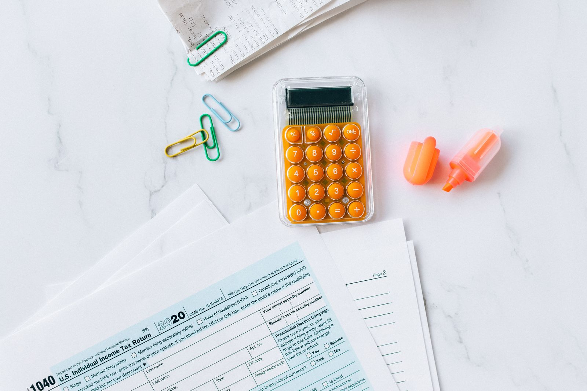
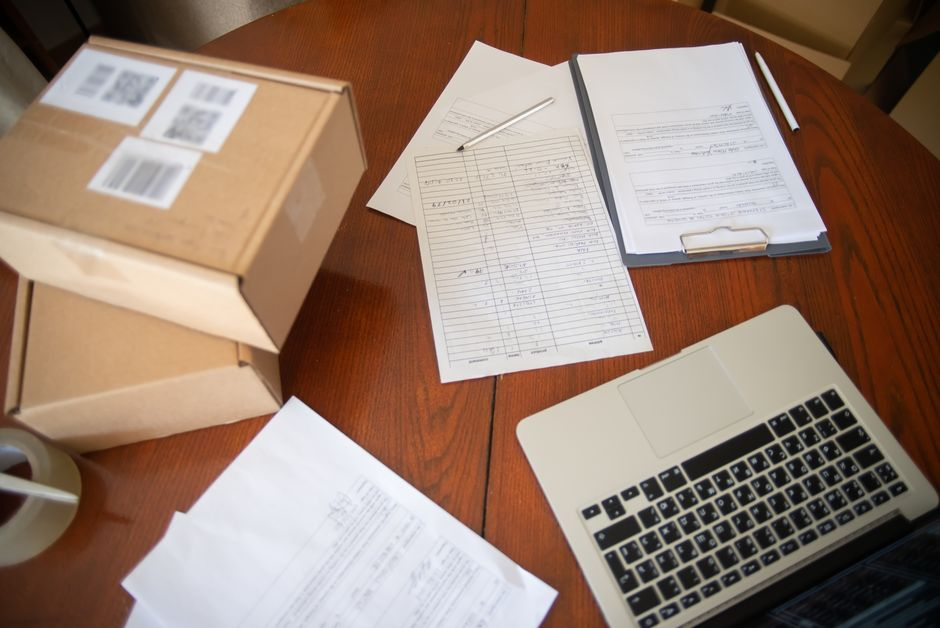
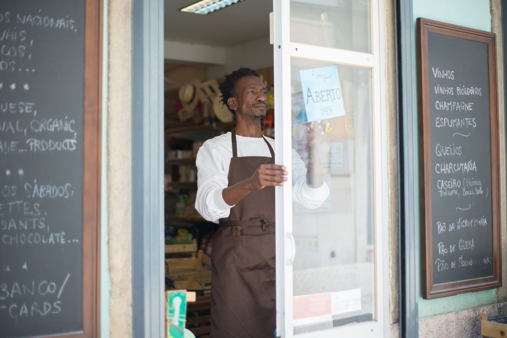
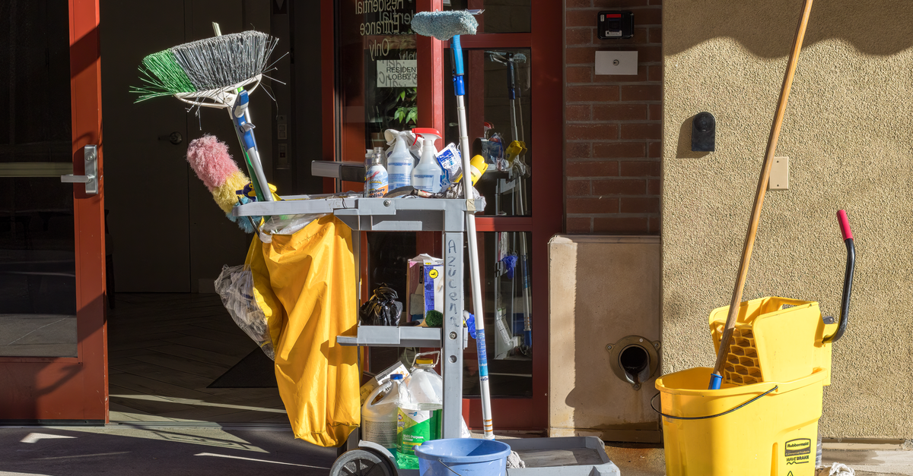
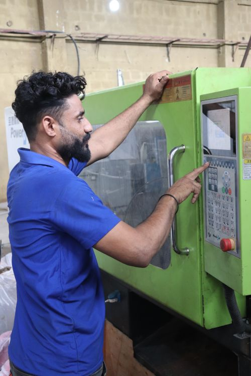
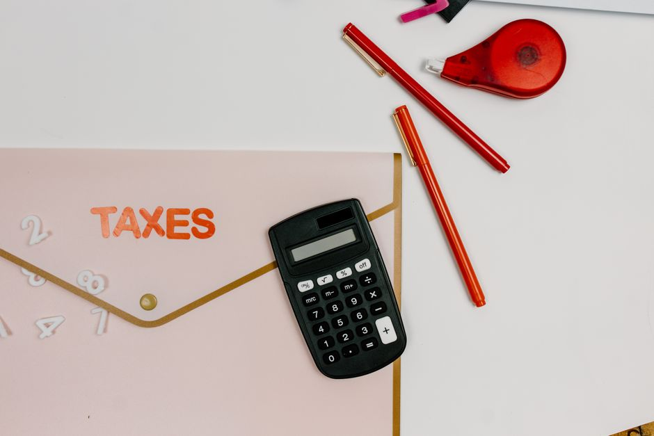
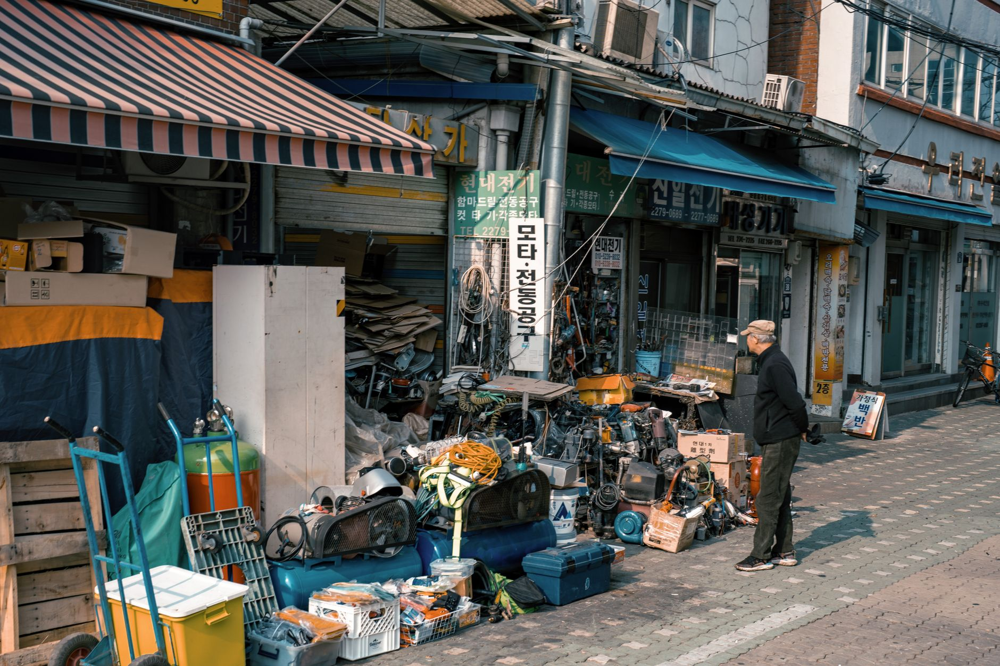

사장님이 오늘 신청할 수 있는 지원만,
공식 공고 기준으로 정리합니다.
정책자금 · 정부지원사업 · 공공조달 · 기업인증 — 대상 · 금액 · 마감 · 필요서류 · 다음 행동까지.
오늘 기준 접수 중 공고 4건 · 정책자금 상품 13종 (직접 6 · 대리 7)공고 상태 확인 기준일 2026-10-05
최근 확인한 정책자금 공고
아래는 최근 확인한 공고이며, 각 카드의 접수중·접수마감 표시가 현재 상태를 나타냅니다. 마감·연장 여부는 신청처에서 최종 확인하세요.
접수중정책자금 · 대리대출
2026년 4분기 청년고용연계자금 접수
- 누가
- 업력 3년 미만 청년(만 39 이하) / 청년 근로자 과반 / 최근 1년 청년 1명 이상 고용 유지
- 얼마
- 7,000만 원
- 금리
- 3.85% (기준 3.85 + 0.0)
- 기간
- 5년 (거치 2년)
- 방식
- 분기 공고 · 예산 소진 시 마감
접수중정책자금 · 대리대출
2026년 4분기 장애인기업지원자금 접수
- 누가
- 장애인복지카드·국가유공자 카드·장애인기업확인서 소지
- 얼마
- 1억 원
- 금리
- 고정 2.00%
- 기간
- 7년 (거치 2년)
- 방식
- 분기 공고 · 예산 소진 시 마감
접수중정책자금 · 대리대출
2026년 4분기 긴급경영안정(일시적경영애로) 접수
- 누가
- 지역경제 위기 지역·감염병 등 영업 피해 소상공인
- 얼마
- 7,000만 원
- 금리
- 3.85% (기준 3.85 + 0.0)
- 기간
- 5년 (거치 2년)
- 방식
- 분기 공고 · 예산 소진 시 마감
정책자금 13종 한눈에 보기
기준금리 3.85% (2026-07-10~, 분기별 변동) · 전체 요건·절차·이자 계산은 2026년 정책자금 13종 총정리 — 연 2.0%부터 5.45%까지, 내 자격이 열리는 자금 찾기
| 자금 | 누가 | 한도 | 금리 | 기간 |
|---|---|---|---|---|
| 혁신성장촉진직접 신청↗ | 수출·2년 연속 매출 10% 신장·스마트공장 등 11개 요건 중 1 | 1억~10억 (유형별) | 4.25% | 운전 5년 / 시설 8년 |
| 민간투자연계형 매칭융자직접 신청↗ | 주관기관 투자 + 선투자 추천서 | 5억 | 4.25% | 8년 |
| 상생성장지원직접 신청↗ | TOPS·OPS 선정, 상생협약 플랫폼 입점 | 7천만~12억 (형별) | 4.25% | 운전 5년 / 시설 8년 |
| 일시적경영애로직접 신청↗ | 연매출 1억 4백만 미만 + 업력 7년 미만 + 애로 사유 | 7,000만 | 3.85% | 5년 (거치 2년) |
| 신용취약소상공인직접 신청↗ | 신용관리 교육 이수 + NCB 839점 이하 | 3,000만 | 5.45% | 5년 (거치 2년) |
| 재도전특별직접 신청↗ | 재창업 교육 수료·채무조정 성실상환 등 유형별 | 7천만~2억 (형별) | 4.25~5.45% | 5년 (거치 2년) |
| 소공인특화대리 신청↗ | 제조업, 상시근로자 10인 미만 | 운전 1억 / 시설 5억 | 4.45% | 운전 5년 / 시설 8년 |
| 일반경영안정대리 신청↗ | 업력 무관 소상공인 | 7,000만 | 4.45% | 5년 (거치 2년) |
| 긴급경영안정(재해)대리 신청↗ | 지자체 재해확인증 소지 | 1억 | 고정 2.00% | 5년 (거치 2년) |
| 긴급경영안정(일시적)대리 신청↗ | 지역경제 위기·감염병 피해 | 7,000만 | 3.85% | 5년 (거치 2년) |
| 장애인기업지원대리 신청↗ | 장애인복지카드·장애인기업확인서 | 1억 | 고정 2.00% | 7년 (거치 2년) |
| 청년고용연계대리 신청↗ | 업력 3년 미만 청년 경영 + 청년 고용·과반 | 7,000만 | 3.85% | 5년 (거치 2년) |
| 대환대출대리 신청↗ | 중저신용 소상공인의 고금리 사업자대출 애로 | 5,000만 | 고정 4.50% | 10년 |
실무 도구
기본 가이드
광고
- 정책자금4분기 지원사업 마감 달력 — 지방자금은 접수처가 군청이 아닙니다

정책자금4분기 접수 4연전 — 10.6 기업·10.13 소공인·10.20 수출바우처·11.3 로컬크리에이터 조달10월 1주차 공공계약 — 58건 중 10억+ 6건 (국방부 38.5억)
조달10월 1주차 공공계약 — 58건 중 10억+ 6건 (국방부 38.5억)
정책자금대리대출 시간표 — 확인서 90일 안에 은행까지 도착하는 법
정책자금재도전특별자금 완전정복 — 일반형·희망형·도약형, 어느 칸에 서 있나- 정책자금노란우산 완전정복 — 월 5만 원부터 시작하는 사장님 퇴직금, 소득공제·복리이율·급전 3종까지

공공조달적격심사 통과선과 투찰률 — 85점·89.995%가 내 입찰금액을 정한다
정부지원사업스마트공장 지원사업 2026 — 제조 소기업이 ‘중간1’부터 시작하는 순서- 정부지원사업예비창업패키지 2026 — 사업자 없는 사람을 위한 사업화 자금 평균 0.4억

정책자금정책자금 우대금리 5종 — 금리를 내려주는 조건들- 기업인증장애인기업 확인서 — 대표자가 장애인이라면 열리는 조달 문
- 정책자금청년고용연계자금 — 청년 사장님·청년 고용 사장님을 위한 7천만 원

정책자금소상공인 일반경영안정자금 완전정복 — 연 4.45%·7천만 원